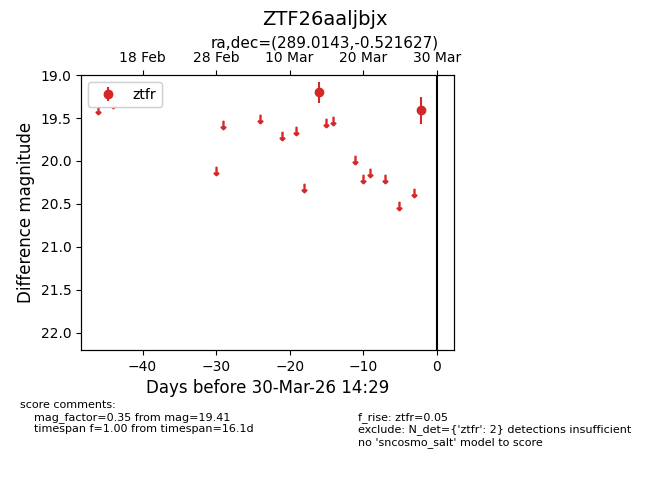
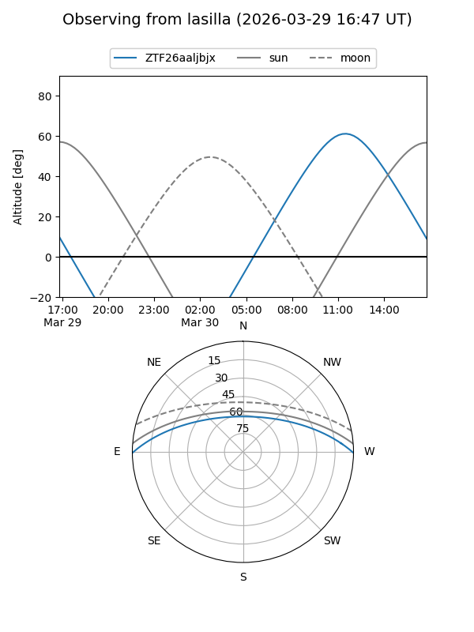
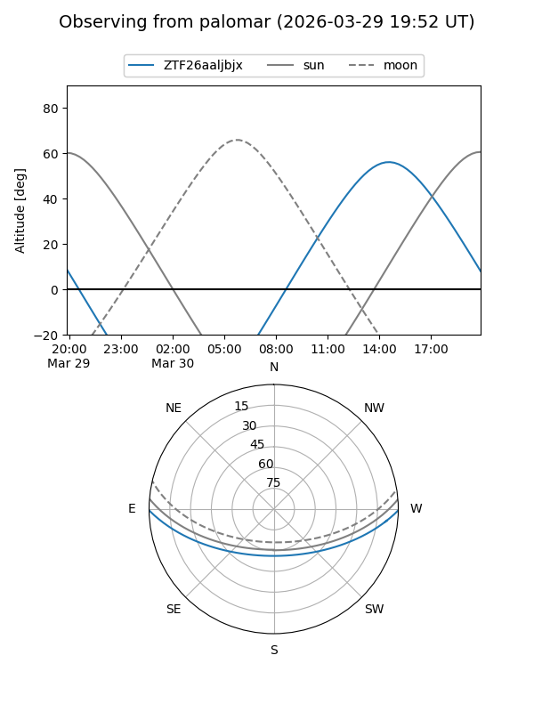

ZTF26aaljbjx
Target ZTF26aaljbjx at 2026-03-30 14:32
Aliases and brokers:
FINK: link
Lasair: link
ALeRCE: link
alt names
ZTF26aaljbjx (ztf,fink_ztf)
Coordinates:
equatorial (ra, dec) = 289.0143,-0.52163
equatorial (HMS+DMS) = 19:16:03.43,-00:31:17.86
galactic (l, b) = (35.2810,-5.71429)
Flags:
Photometry:
last ztfr=19.41
2 ztfr detections
Lightcurve

Visibility


Additional plots